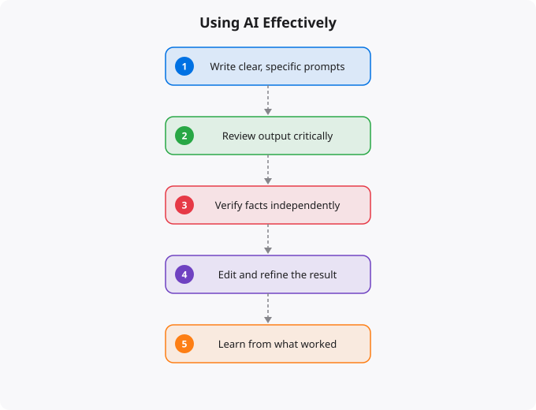

Most people use AI tools in one of two dysfunctional ways. The first is over-trust: accepting AI output without critical evaluation, treating the AI as an oracle, and outsourcing thinking entirely. The second is under-use: dabbling superficially without developing genuine fluency, dismissing the tools as toys, and missing the genuine productivity leverage they provide. Neither approach is right. Using AI effectively requires a more nuanced mental model — understanding what AI is genuinely good at, where its limitations are, and how to integrate it productively into your actual workflows.
Large language models (LLMs) — the technology behind ChatGPT, Claude, Gemini, and similar tools — are systems that have been trained to predict the next most likely sequence of text given an input. Through this training process on enormous quantities of text, they develop the ability to generate fluent, contextually appropriate responses across a vast range of topics. They have no access to real-time information unless specifically provided with tools for that, they do not genuinely understand in the way humans do, they can produce confident-sounding incorrect statements (commonly called hallucinations), and they do not have preferences, intentions, or stakes in outcomes.
Understanding these properties is not about dismissing AI — it is about using it appropriately. AI is good at generating well-structured text, explaining concepts, suggesting approaches, producing code from well-specified requirements, summarizing documents, brainstorming options, and translating between formats. AI is unreliable for tasks requiring verified factual accuracy on specific details, up-to-date information, or specialized domain expertise where errors could be consequential without verification.
The most effective mental model for using AI professionally is: you are the expert, and AI is a highly capable collaborator with specific strengths and weaknesses. The expert evaluates the collaborator's suggestions, accepts the good ones, redirects when the output is not quite right, and maintains overall responsibility for the quality and correctness of the work. This model keeps you in the right position relative to the output. You are accountable for what you produce. You bring the domain expertise and judgment. AI brings speed, breadth, and tireless availability. When you maintain this mental model, you use AI most effectively — leveraging its speed for the tasks where it excels while applying your judgment for the tasks where human expertise matters.
Writing first drafts: starting from a blank page is psychologically difficult and time-consuming. Using AI to generate a rough first draft, then editing and improving it substantially, is far more efficient than writing from scratch. The AI handles the blank-page problem; you handle the quality and accuracy. Code assistance: for routine code — standard patterns, boilerplate, transformations, documentation — AI can dramatically accelerate production. The key is reviewing generated code carefully rather than deploying it without review. Testing edge cases, checking error handling, and verifying the logic are your responsibilities. Learning new concepts: explaining an unfamiliar concept in multiple ways at different levels of depth is something AI does very well. Using AI as an interactive explainer — asking follow-up questions, requesting examples, asking for analogies — can significantly accelerate the acquisition of new knowledge. Research and synthesis: using AI to quickly survey a topic, identify key concepts and questions, and structure further research is highly effective. Follow up AI synthesis with primary source verification on anything that matters.
The most important discipline for effective AI use is verification. Develop the automatic habit of asking: what could be wrong here? What claims are being made that I should verify? What assumptions is this output making that might not be true for my specific situation? For factual claims: verify important ones against reliable primary sources. AI confidently states incorrect information often enough that unverified factual claims in important documents are a real risk. For code: test it. Do not trust that generated code is correct because it looks right. Write tests, check edge cases, review the logic carefully. For advice and strategy: treat AI suggestions as starting points, not conclusions. Your specific situation, constraints, and context are what AI does not have access to. Apply judgment accordingly.
AI fluency — the ability to use AI tools effectively and consistently — is a skill that develops through practice. Invest in developing effective prompting habits: providing clear context, specifying the format you want, giving examples of what good output looks like, breaking complex requests into clear sub-tasks. Experiment broadly to discover where AI provides the most value in your specific workflow. Not all tasks benefit equally from AI assistance — finding the high-leverage use cases in your particular work is worth deliberate exploration. Build feedback loops: when AI output is particularly good or particularly bad, think about why. Understanding the patterns of AI success and failure in your domain makes you significantly more effective over time. The people who develop genuine AI fluency will have a meaningful advantage over those who use AI superficially or not at all. That advantage is available to anyone willing to invest the time and practice to develop it.
Artificial intelligence is evolving faster than almost any other technology domain. The specific tools, models, and capabilities that are current today will look different in a year. This makes staying current a genuine challenge — the half-life of specific technical knowledge is short. The strategies that work: follow the primary sources (research blogs from Anthropic, OpenAI, Google DeepMind, Hugging Face) rather than relying on summaries that may be outdated. Focus on underlying principles that transfer — model architecture concepts, evaluation methods, prompt engineering principles — rather than memorizing specific tool interfaces that will change. Build things with current tools to develop practical intuition, even knowing those specific tools will evolve. The professionals who navigate fast-moving fields best are those who can quickly assess new developments, extract the signal from the noise, and rapidly evaluate what is genuinely significant versus what is marketing.
Disclaimer:
This article is written for educational and informational purposes only.
It does not provide financial, legal, investment, or professional advice.
Cloud services, pricing, security, and practices may vary by provider,
region, and use case. Always verify information from official
documentation before making decisions.
Most people use AI tools with vague, short prompts and get mediocre results. Then they conclude AI is not that useful for their work. The problem is not the AI -- it is the prompting. Effective prompting is a learnable skill that dramatically changes what you get from AI tools.
C - Context: Tell the AI who you are and the situation
"I am a junior Python developer working on a Flask API"
"I am writing a blog post for non-technical startup founders"
"I am an HR manager preparing for a performance review"
R - Role: Tell the AI what role to play
"Act as a senior DevOps engineer reviewing my infrastructure"
"Act as a technical editor checking for clarity"
"Act as a skeptical investor asking hard questions"
A - Action: Be specific about what you want done
VAGUE: "Help me with this code"
SPECIFIC: "Review this Python function for performance issues and suggest improvements"
F - Format: Specify how you want the output
"Respond with a numbered list"
"Give me the answer in 3 bullet points with explanations"
"Provide a table comparing the options"
T - Tone: Specify the register and style
"Write in a professional but approachable tone"
"Be direct and brief, no fluff"
"Use technical language -- I am an expert in this field"AI systems are confident even when wrong. Understanding when to trust and when to verify is essential for using AI responsibly.
Generally safe to trust: Code syntax and structure (test it anyway), formatting and style editing, summarising documents you have already read, generating options or brainstorming alternatives, standard explanations of established concepts.
Always verify: Specific statistics and numbers, recent events (AI training data has a cutoff), medical or legal advice, financial projections, scientific claims where you cannot assess accuracy yourself, any claim where being wrong has real consequences.
Never rely on AI alone: Medical diagnosis or treatment decisions, legal filings or contracts, financial trading decisions, safety-critical system designs, anything where an error harms people.
A legitimate concern: if you use AI for everything, do you stop developing your own capabilities? The risk is real but manageable. The key is deliberate use -- use AI to accelerate tasks where you understand the domain, not to replace learning. When using AI for writing, still engage with what it produces critically. When using AI for code, understand what the code does before using it. When using AI for analysis, verify key points independently. The goal is AI as a powerful assistant, not AI as a replacement for your judgment.
Prompt engineering is the practice of crafting inputs to AI systems to get better outputs. You do not need a formal course -- you need practice. Start with the CRAFT framework above. Experiment with being more specific, providing context, and asking for the format you want. Effective prompting is learned by doing.
All are large language model AI assistants. ChatGPT (OpenAI) is the most widely used, strong at code and general tasks. Claude (Anthropic) is strong at long documents, nuanced writing, and coding, with a longer context window. Gemini (Google) integrates with Google Workspace and searches the web. For most tasks, try the free tier of each and see which output you prefer for your specific use case.
Yes, significantly. Use AI to explain concepts in multiple ways until you understand. Ask AI to review your code and explain what you did wrong. Use AI to generate practice problems at the right difficulty. Ask AI to explain error messages you do not understand. AI dramatically reduces the friction of learning by providing instant, personalised explanations.
Yes. India is one of the fastest-growing tech markets globally. These skills are in high demand across startups, MNCs, and product companies in Bangalore, Hyderabad, Pune, and Mumbai.
Follow official documentation, tech blogs from practitioners, GitHub repositories, and communities like Dev.to, Hashnode, and Reddit. Avoid news that creates urgency without substance.
Official documentation first. Then practical tutorials. Then build real projects. SRJahir Tech articles are written from real production experience — bookmark the series that matches your learning goal.
Consistent daily practice for 3-6 months produces real, usable skills. The key is building projects, not just reading. Every article on SRJahir Tech includes practical examples you can implement today.
Yes. All articles on SRJahir Tech are completely free. No paywalls, no subscriptions. Quality technical education should be accessible to everyone, especially aspiring engineers in India.